# Set a fixed seed to ensure reproducibility
the.seed <- 42
set.seed(the.seed)
# Load the packages required for dimensionality reduction, clustering and visualisation
suppressPackageStartupMessages({
library(Seurat)
library(dplyr)
library(ggplot2)
})Glioblastoma scRNA-seq - Clustering and Cell-Type Annotation
Analysis setup
A fixed random seed was used to make the stochastic steps of the analysis, including clustering and UMAP, reproducible.
The sample name and the input file were defined separately. The filtered Seurat object was generated during the quality-control analysis and already contains the normalised RNA-expression matrix.
# Define the sample name used for downstream output files
sample.name <- "brain_DV200"
# Define the species for subsequent biological analyses
species <- "Human"
# Locate the object produced by the QC script (file-name case is ignored)
filtered_file <- list.files("../data/processed_data",
pattern = paste0("^", sample.name, "_FILTERED\\.rda$"),
ignore.case = TRUE, full.names = TRUE)
stopifnot(length(filtered_file) == 1)
# Load the filtered and normalised Seurat object
load(filtered_file)
# Verify that the expected Seurat object is present
stopifnot(exists("sobjFiltrd"))
stopifnot(inherits(sobjFiltrd, "Seurat"))A brief summary of the object was inspected before starting the clustering analysis.
# Display the dimensions of the filtered dataset
cat("Number of cells:", ncol(sobjFiltrd), "\n")Number of cells: 3912 cat("Number of genes:", nrow(sobjFiltrd), "\n")Number of genes: 18985 # Display the available metadata fields
colnames(sobjFiltrd@meta.data)[1] "orig.ident" "nCount_RNA" "nFeature_RNA" "percent_mt"
[5] "doublets.class"# Display the assays and RNA data layers stored in the object
Assays(sobjFiltrd)[1] "RNA"Layers(sobjFiltrd[["RNA"]])[1] "counts" "data" Selection of highly variable genes
Clustering was not performed using every detected gene. Genes with the highest cell-to-cell variability were selected because they carry more information about biological heterogeneity, whereas genes with low variability contribute less to the separation of cellular populations.
The RNA assay was used for all expression-based analyses. Normalisation was not repeated because LogNormalize had already been applied at the end of the QC workflow.
# Use the RNA assay for feature selection and dimensionality reduction
DefaultAssay(sobjFiltrd) <- "RNA"
# Identify the 2,000 most variable genes using the variance-stabilising method
sobjFiltrd <- FindVariableFeatures(sobjFiltrd, selection.method = "vst", nfeatures = 2000,
verbose = FALSE)
# Store the complete list of highly variable genes
list_hvg <- VariableFeatures(sobjFiltrd)
# Display the ten most variable genes
head(list_hvg, 10) [1] "CALB2" "SST" "TAC1" "COL3A1" "CLDN5" "GAD2" "NPAS4" "COL1A1"
[9] "CAVIN2" "PNOC" # Verify the number of selected genes
length(list_hvg)[1] 2000The variable-feature plot was used to visualise the relationship between average expression and standardised variance. The ten most variable genes were labelled for interpretation.
# Visualise the variable genes and highlight the ten most variable features
variable_plot <- VariableFeaturePlot(sobjFiltrd)
LabelPoints(plot = variable_plot, points = head(list_hvg, 10), repel = TRUE)When using repel, set xnudge and ynudge to 0 for optimal results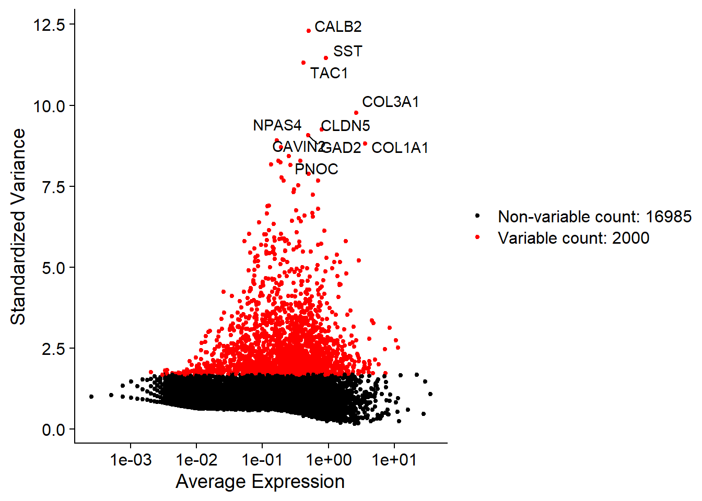
The most variable genes may reflect cell identity, tumour states, immune activation, cell-cycle activity or technical stress. Their biological interpretation was therefore examined later using cluster markers rather than at this stage.
Data scaling
Before PCA, the expression values of the variable genes were centred and scaled. This prevents highly expressed genes from dominating the dimensionality-reduction analysis solely because of their absolute expression levels.
# Centre and scale the expression of the variable genes
sobjFiltrd <- ScaleData(sobjFiltrd, verbose = FALSE)Principal component analysis
Principal component analysis was applied to the scaled expression values of the 2,000 variable genes. PCA summarises correlated gene-expression programmes into a smaller number of orthogonal components.
# Compute 50 principal components from the highly variable genes
sobjFiltrd <- RunPCA(object = sobjFiltrd, features = list_hvg, npcs = 50,
seed.use = the.seed, verbose = FALSE)The genes contributing most strongly to the first principal components were inspected to determine which biological programmes drove the main sources of variation.
# Display the genes with the strongest loadings for the first six PCs
print(sobjFiltrd[["pca"]], dims = 1:6, nfeatures = 5)PC_ 1
Positive: HMOX1, SELENOP, IFI30, NUPR1, FN1
Negative: DNM1, SYT1, GABBR2, ATP1A3, SNAP25
PC_ 2
Positive: FN1, EPAS1, CLDN5, CDH5, COL4A1
Negative: CARNS1, MOG, MYRF, TMEM144, ENPP2
PC_ 3
Positive: CLDN5, VWF, ESAM, CDH5, CAVIN2
Negative: SLC2A5, IFI30, FCGBP, ALOX5AP, ITGAX
PC_ 4
Positive: IL26, DEPRECATED-ENSG00000231396, FOXD4L5, USP17L23, USP17L15
Negative: VWF, NRGN, CLDN5, ENC1, NPTX1
PC_ 5
Positive: CD300A, ITGAX, SLC2A5, IFI30, WDFY4
Negative: FGFR3, AGT, TNC, ELN, BCAN
PC_ 6
Positive: SLC32A1, GAD1, GAD2, ENG, PNOC
Negative: IL26, DEPRECATED-ENSG00000231396, IL22, USP17L3, FOXD4L5 # Visualise the gene loadings of the first three PCs
VizDimLoadings(sobjFiltrd, dims = 1:3, reduction = "pca")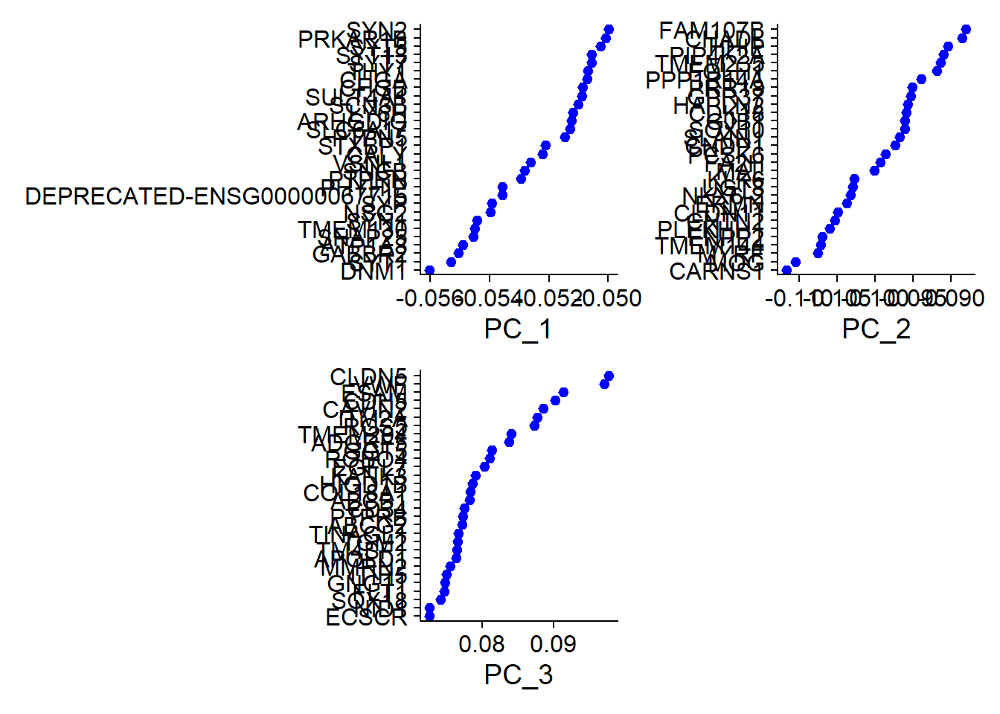
A heatmap of the first principal components provides an additional representation of the expression programmes separating the cells.
# Visualise the expression patterns associated with the first six PCs
DimHeatmap(sobjFiltrd, dims = 1:6, cells = 500, balanced = TRUE)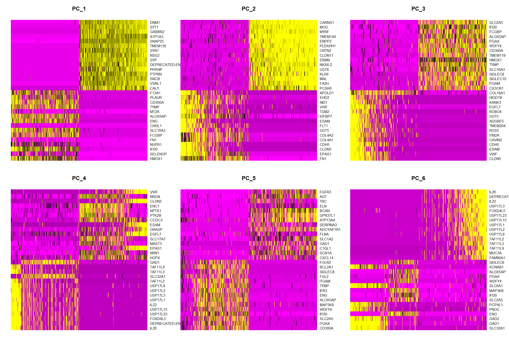
Selection of the number of principal components
The elbow plot was used to evaluate how much variation was captured by successive principal components. The curve decreased gradually rather than showing a single sharp elbow.
# Visualise the cells in the first two principal components
DimPlot(sobjFiltrd, reduction = "pca")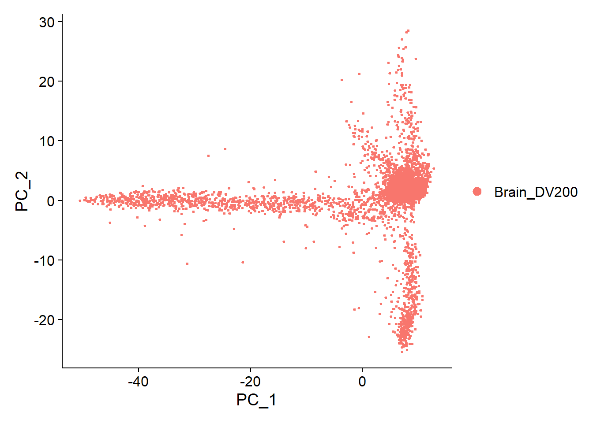
# Examine the standard deviation associated with the first 50 PCs
ElbowPlot(sobjFiltrd, ndims = 50)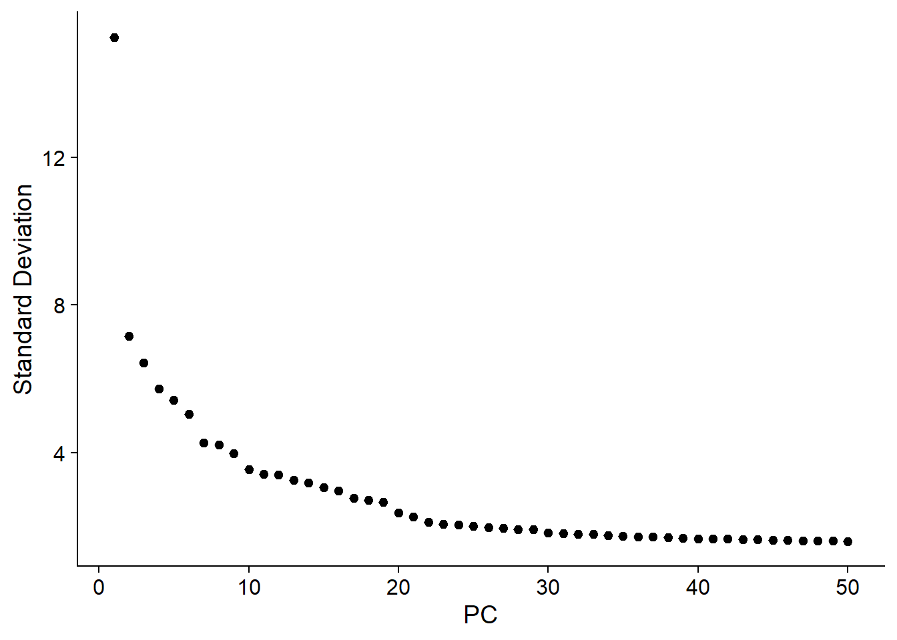
Twenty principal components were retained. This value captured the principal transcriptional structure while preserving small populations, including the cycling and T/NK cells, as distinct clusters. The choice of 20 PCs is a pragmatic analytical choice rather than an exact biological boundary; its relevance was evaluated through the marker expression and the recovery of biologically interpretable populations.
# Number of principal components used for graph construction and UMAP
nPC <- 20Graph construction and clustering
A shared nearest-neighbour graph was constructed from the first 20 principal components. Louvain clustering was then evaluated at several resolutions to assess the stability and granularity of the cellular populations.
# Construct the nearest-neighbour and shared nearest-neighbour graphs
sobjFiltrd <- FindNeighbors(object = sobjFiltrd, dims = 1:nPC, verbose = FALSE)
# Test several Louvain resolutions, from broad to fine clustering
sobjFiltrd <- FindClusters(object = sobjFiltrd, resolution = c(0.1, 0.2, 0.5, 1, 2),
algorithm = 1, random.seed = the.seed, verbose = FALSE)
# Clusters are stored in the metadataThe number of clusters obtained at each resolution was compared. Low resolutions produce broader populations, whereas high resolutions can separate related states but may also over-fragment biologically coherent populations.
# Define the metadata columns containing the tested resolutions
resolution_columns <- c("RNA_snn_res.0.1", "RNA_snn_res.0.2", "RNA_snn_res.0.5",
"RNA_snn_res.1", "RNA_snn_res.2")
# Count the number of clusters detected at each resolution
number_of_clusters <- sapply(resolution_columns, function(column_name) {
length(unique(sobjFiltrd@meta.data[[column_name]]))
})
number_of_clustersRNA_snn_res.0.1 RNA_snn_res.0.2 RNA_snn_res.0.5 RNA_snn_res.1 RNA_snn_res.2
9 12 17 22 28 The tested resolutions produced 9 clusters at resolution 0.1; 12 clusters at resolution 0.2; 17 clusters at resolution 0.5; 22 clusters at resolution 1; 28 clusters at resolution 2.
Resolution 0.2 was selected as a compromise between recovering the major cellular populations and avoiding excessive fragmentation.
# Store the selected clustering resolution
selected_resolution <- "RNA_snn_res.0.2"
# Retrieve and numerically order the selected cluster identities
selected_clusters <- as.character(sobjFiltrd@meta.data[[selected_resolution]])
selected_cluster_levels <- as.character(sort(as.integer(unique(selected_clusters))))
# Set the selected clusters as the active Seurat identities
Idents(sobjFiltrd) <- factor(selected_clusters, levels = selected_cluster_levels)
# Stop the analysis if only one identity is detected
stopifnot(length(unique(Idents(sobjFiltrd))) > 1)
# Display the number of cells in each cluster
table(Idents(sobjFiltrd))
0 1 2 3 4 5 6 7 8 9 10 11
797 600 535 455 442 318 174 170 153 128 92 48 The selected clustering contained 12 clusters, with markedly different cell numbers. Cluster size alone was not used to determine biological relevance, as rare immune or vascular populations may contain substantially fewer cells than dominant neural or tumour populations.
UMAP visualisation
UMAP was computed using the same 20 principal components used for graph construction. UMAP provides a two-dimensional representation of the transcriptional relationships between cells but does not independently define cell types.
# Compute the UMAP representation from the first 20 PCs
sobjFiltrd <- RunUMAP(object = sobjFiltrd, dims = 1:nPC, seed.use = the.seed, verbose = FALSE)Warning: The default method for RunUMAP has changed from calling Python UMAP via reticulate to the R-native UWOT using the cosine metric
To use Python UMAP via reticulate, set umap.method to 'umap-learn' and metric to 'correlation'
This message will be shown once per sessionThe UMAP was first coloured using the unsupervised cluster numbers. These numbers do not yet represent biological identities.
# Visualise the clusters selected at resolution 0.2
DimPlot(sobjFiltrd, reduction = "umap", group.by = selected_resolution, label = TRUE,
repel = TRUE) + labs(title = "Unsupervised clustering at resolution 0.2")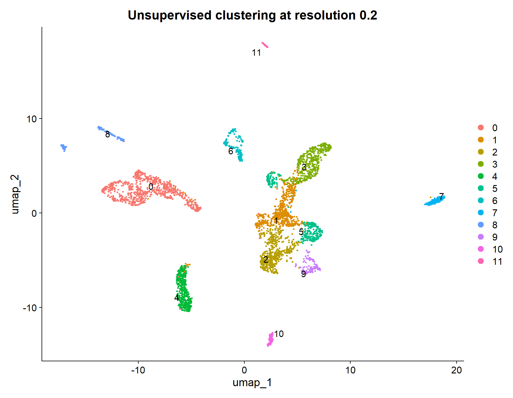
The UMAP should not be interpreted as a quantitative measure of distance between populations. Its main purpose here was to visualise the global organisation of the cells and the consistency of the selected clustering.
Assessment of potential technical effects
Before interpreting the clusters biologically, quality-control metrics were projected onto the UMAP. This step tested whether the clustering was primarily driven by mitochondrial content, library size or the number of detected genes.
Quantile-based colour limits were used for visualisation so that a small number of cells with very high RNA content did not dominate the colour scale. These limits only affect the figure and do not alter the underlying data.
# Project QC metrics onto the UMAP to identify potential technical gradients
FeaturePlot(object = sobjFiltrd, reduction = "umap",
features = c("percent_mt", "nCount_RNA", "nFeature_RNA"),
min.cutoff = "q05", max.cutoff = "q95", order = TRUE, ncol = 3)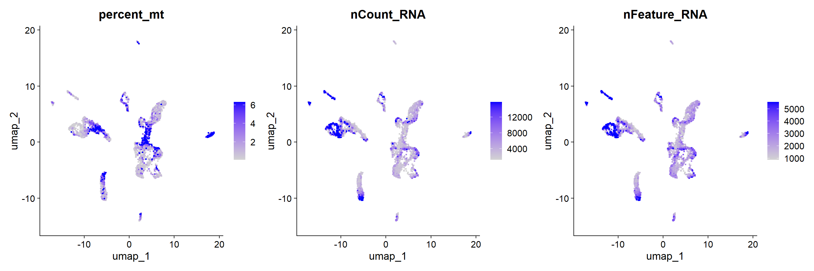
The distributions of the same metrics were also compared across clusters. Large systematic differences would suggest that some clusters might be influenced by sequencing depth or residual low-quality cells rather than biological identity.
# Compare QC distributions across the selected clusters
VlnPlot(object = sobjFiltrd, features = c("nFeature_RNA", "nCount_RNA", "percent_mt"),
group.by = selected_resolution, pt.size = 0, ncol = 3)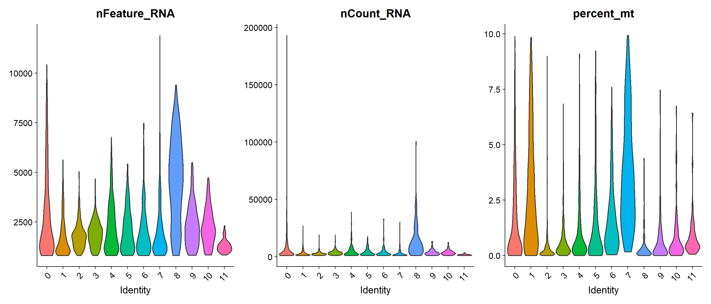
Differences in RNA content between clusters are not necessarily technical artefacts, as cell size and transcriptional activity vary between cell types. Consequently, clusters were not removed solely because they displayed higher UMI or gene counts. Their identities were instead evaluated using cluster-enriched genes, canonical markers and reference-based annotation.
Cluster annotation
Identification of cluster marker genes
Before assigning biological identities, the genes that characterised each cluster were identified. This data-driven step reduces reliance on predefined marker lists and provides an unbiased description of the transcriptional programmes detected by the clustering analysis.
Differential expression was performed by comparing each cluster with all remaining cells. Positive log-fold changes identify genes enriched in a cluster, whereas negative log-fold changes identify genes expressed at lower levels in that cluster than in the rest of the dataset.
# Identify both positively and negatively associated genes for every cluster
all_markers <- FindAllMarkers(
object = sobjFiltrd,
only.pos = FALSE,
test.use = "wilcox",
min.pct = 0.10,
logfc.threshold = 0.25,
verbose = FALSE
)For a (much!) faster implementation of the Wilcoxon Rank Sum Test,
(default method for FindMarkers) please install the presto package
--------------------------------------------
install.packages('devtools')
devtools::install_github('immunogenomics/presto')
--------------------------------------------
After installation of presto, Seurat will automatically use the more
efficient implementation (no further action necessary).
This message will be shown once per session# Verify that marker genes were successfully identified
stopifnot(nrow(all_markers) > 0)
stopifnot("p_val_adj" %in% colnames(all_markers))
dim(all_markers)[1] 65152 7head(all_markers) p_val avg_log2FC pct.1 pct.2 p_val_adj cluster gene
NRGN 0 5.139124 0.890 0.107 0 0 NRGN
CAMK2A 0 4.819895 0.827 0.068 0 0 CAMK2A
CPLX2 0 4.133926 0.828 0.087 0 0 CPLX2
PHYHIP 0 5.048569 0.792 0.061 0 0 PHYHIP
CA11 0 4.706608 0.816 0.088 0 0 CA11
ENC1 0 4.887098 0.852 0.126 0 0 ENC1Mitochondrial and ribosomal genes, as well as deprecated gene identifiers, were excluded from the annotation table because they generally reflect cellular stress, RNA content or technical variation rather than cell identity.
# Retain statistically significant markers and remove genes that are
# generally not informative for cell-type annotation
informative_markers <- all_markers %>%
filter(
p_val_adj < 0.05,
!grepl("^MT-", gene),
!grepl("^RPL", gene),
!grepl("^RPS", gene),
!grepl("^DEPRECATED", gene)
)Positive cluster markers
For each cluster, the five genes with the highest positive log-fold changes were selected. The additional requirement on the difference between pct.1 and pct.2 favours genes expressed in a larger proportion of cells within the cluster than outside it.
# Select the five strongest positive markers for each cluster
top_positive <- informative_markers %>%
filter(avg_log2FC > 0, pct.1 - pct.2 > 0.10) %>%
group_by(cluster) %>%
slice_max(order_by = avg_log2FC, n = 5, with_ties = FALSE) %>%
ungroup()
# Display the marker table
print(top_positive %>% select(cluster, gene, avg_log2FC, pct.1, pct.2), n = Inf)# A tibble: 60 × 5
cluster gene avg_log2FC pct.1 pct.2
<fct> <chr> <dbl> <dbl> <dbl>
1 0 NPTX1 5.67 0.71 0.033
2 0 TBR1 5.43 0.46 0.01
3 0 FSTL4 5.34 0.404 0.015
4 0 CRYM 5.32 0.563 0.025
5 0 NRGN 5.14 0.89 0.107
6 1 LTF 3.91 0.542 0.072
7 1 SERPINA3 3.48 0.527 0.093
8 1 ID3 3.35 0.668 0.13
9 1 FOXJ1 3.34 0.173 0.024
10 1 PLA2G2A 3.15 0.155 0.018
11 2 ONECUT2 5.52 0.454 0.025
12 2 LMO1 5.40 0.426 0.028
13 2 SAMD11 5.31 0.172 0.011
14 2 COL4A6 4.76 0.449 0.03
15 2 SERPINF2 4.73 0.232 0.028
16 3 CCL4L2 6.81 0.275 0.007
17 3 CCL3 6.18 0.422 0.023
18 3 CCL4 6.02 0.31 0.019
19 3 CCL3L1 5.73 0.169 0.004
20 3 SIGLEC8 5.70 0.648 0.023
21 4 CARNS1 6.95 0.898 0.031
22 4 SLC5A11 6.39 0.367 0.005
23 4 ENPP2 6.30 0.842 0.038
24 4 TMEM235 6.26 0.654 0.015
25 4 LDB3 6.10 0.554 0.008
26 5 CXCL8 6.17 0.425 0.027
27 5 ANGPTL4 5.25 0.601 0.062
28 5 ADM 5.08 0.767 0.061
29 5 PI3 4.89 0.135 0.012
30 5 TREM1 4.78 0.484 0.032
31 6 VWF 7.80 0.632 0.016
32 6 CLDN5 7.63 0.626 0.025
33 6 CAVIN2 7.43 0.448 0.01
34 6 ESAM 7.39 0.448 0.008
35 6 HIGD1B 7.33 0.414 0.005
36 7 TRIM49D1 13.1 0.394 0
37 7 CLLU1OS 11.7 0.212 0
38 7 TPTE 11.6 0.188 0
39 7 ELF5 11.6 0.182 0
40 7 HRG 11.5 0.141 0
41 8 SLC32A1 7.45 0.895 0.008
42 8 SST 7.22 0.379 0.014
43 8 TAC1 7.10 0.379 0.01
44 8 PNOC 7.08 0.556 0.007
45 8 GAD2 6.44 0.895 0.019
46 9 TROAP 6.70 0.578 0.009
47 9 ASPM 6.56 0.531 0.012
48 9 TOP2A 6.31 0.797 0.032
49 9 KIF18B 6.31 0.594 0.01
50 9 AURKB 6.25 0.508 0.01
51 10 COL20A1 8.88 0.848 0.007
52 10 GPR17 7.83 0.826 0.014
53 10 PCDH15 7.33 0.728 0.018
54 10 NR0B1 6.84 0.304 0.005
55 10 MYT1 6.79 0.739 0.027
56 11 CD3D 8.99 0.625 0.004
57 11 IL2RB 8.74 0.521 0.005
58 11 CD247 8.74 0.458 0.007
59 11 LCK 8.61 0.604 0.004
60 11 CD96 8.55 0.729 0.007The full marker table was saved to ensure that the annotation decisions remained traceable and could be revisited if necessary.
# Save all cluster markers for subsequent inspection
write.csv(all_markers, "../data/processed_data/markers_all_clusters.csv", row.names = FALSE)
# Save the selected positive markers separately
write.csv(top_positive, "../data/processed_data/top_positive_markers.csv", row.names = FALSE)Visualisation of data-driven cluster markers
To keep the figure readable, the three strongest positive markers per cluster were displayed in a DotPlot. Dot size represents the percentage of cells expressing a gene, while colour represents its average scaled expression within the cluster.
# Select three representative positive markers per cluster for visualisation
top3_positive <- top_positive %>%
group_by(cluster) %>%
slice_max(order_by = avg_log2FC, n = 3, with_ties = FALSE) %>%
ungroup()
# Organise genes according to the cluster in which they were identified
positive_marker_list <- split(top3_positive$gene, paste0("Cluster ", top3_positive$cluster))
# Visualise the expression of the selected markers across all clusters
DotPlot(sobjFiltrd, features = positive_marker_list, group.by = selected_resolution,
cluster.idents = FALSE) +
RotatedAxis() +
labs(title = "Top positive markers of each cluster",
x = "Cluster-enriched genes", y = "Cluster") +
theme(strip.text.x = element_text(angle = 90, hjust = 0, size = 8))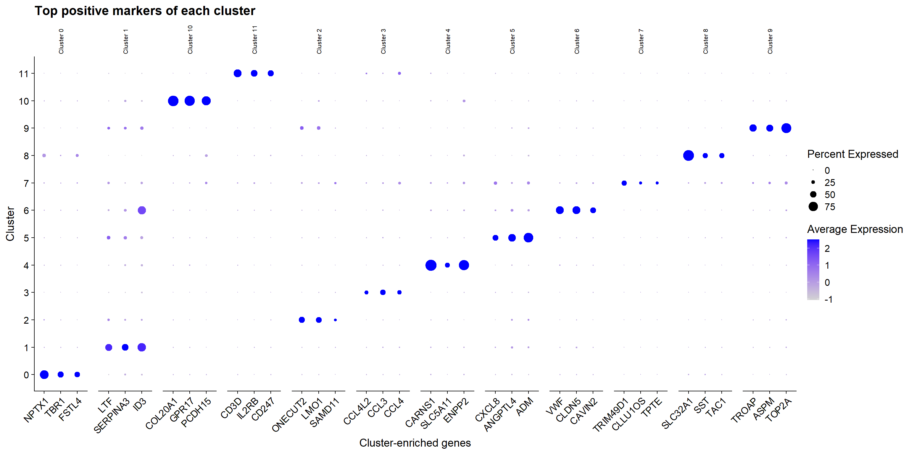
Negatively associated genes
Genes with negative log-fold changes are expressed at lower levels in a given cluster than in the remaining cells. These genes can support an annotation by excluding incompatible transcriptional programmes. However, they should not be interpreted as specific negative markers without considering established biological knowledge.
# Select the five most strongly depleted genes in each cluster
top_negative <- informative_markers %>%
filter(avg_log2FC < 0) %>%
group_by(cluster) %>%
slice_min(order_by = avg_log2FC, n = 5, with_ties = FALSE) %>%
ungroup()
# Display the negatively associated genes
print(top_negative %>% select(cluster, gene, avg_log2FC, pct.1, pct.2), n = Inf)# A tibble: 60 × 5
cluster gene avg_log2FC pct.1 pct.2
<fct> <chr> <dbl> <dbl> <dbl>
1 0 MBOAT1 -11.3 0 0.277
2 0 IRX1 -8.79 0 0.108
3 0 NIBAN1 -8.67 0 0.116
4 0 GCNT2 -8.45 0 0.108
5 0 LTF -8.10 0.004 0.18
6 1 IL34 -7.39 0 0.109
7 1 CACNA1B -5.49 0.002 0.153
8 1 SHISA7 -5.17 0.003 0.152
9 1 CACNG8 -5.05 0.005 0.134
10 1 CAMSAP3 -4.68 0.003 0.125
11 2 NRGN -12.1 0 0.309
12 2 CPLX2 -11.1 0 0.275
13 2 VSNL1 -11.1 0 0.284
14 2 CAMK2A -10.5 0 0.258
15 2 TPPP -10.4 0 0.337
16 3 PTPRS -11.4 0 0.617
17 3 TMEM59L -11.4 0 0.414
18 3 SLC22A17 -11.0 0 0.5
19 3 COL4A2 -11.0 0 0.236
20 3 NDRG4 -10.9 0 0.403
21 4 CLSTN3 -9.71 0 0.273
22 4 GABBR2 -9.46 0 0.198
23 4 SCN1A -9.00 0 0.229
24 4 LAMP5 -8.85 0 0.168
25 4 STEAP3 -8.83 0 0.197
26 5 JPH4 -9.49 0 0.264
27 5 GRIN1 -9.48 0 0.199
28 5 TNR -9.19 0 0.184
29 5 GABBR2 -8.93 0 0.191
30 5 SNCG -8.59 0 0.16
31 6 SYT13 -7.51 0 0.171
32 6 SV2B -7.42 0 0.164
33 6 SYNGR3 -7.40 0 0.18
34 6 NEFM -7.35 0 0.145
35 6 SLC4A10 -7.31 0 0.18
36 7 SLIT1 -7.39 0 0.175
37 7 DYNC1H1 -7.39 0 0.29
38 7 L1CAM -7.04 0 0.153
39 7 NAXD -6.54 0 0.192
40 7 ZNF692 -6.52 0 0.183
41 8 MBP -13.4 0 0.316
42 8 VIM -12.4 0 0.57
43 8 MDM2 -12.0 0 0.483
44 8 CHI3L1 -11.9 0 0.269
45 8 VEGFA -11.6 0 0.305
46 9 PTGDS -10.9 0 0.398
47 9 RNASE1 -9.16 0 0.25
48 9 CPLX2 -8.89 0 0.246
49 9 VSNL1 -8.83 0 0.253
50 9 SNCA -8.61 0 0.349
51 10 SYT1 -8.00 0 0.228
52 10 STMN2 -7.37 0 0.245
53 10 ARRB1 -6.95 0 0.283
54 10 SYNPO -6.82 0 0.226
55 10 DCLK1 -6.42 0 0.204
56 11 SNAP25 -8.74 0 0.332
57 11 OLFM1 -8.66 0 0.372
58 11 DKK3 -8.65 0 0.439
59 11 SPARCL1 -8.52 0 0.404
60 11 CPE -8.29 0 0.452Statistically depleted genes are not always the most biologically informative negative markers. Therefore, expected positive markers and markers of incompatible lineages were examined together in a curated panel.
Reference-based annotation with SingleR
SingleR was used to compare the cluster-level expression profiles with the Human Primary Cell Atlas. This general reference identifies broad immune, vascular and neural lineages, but not glioblastoma-specific malignant states.
# Run once to install the packages
BiocManager::install(c("SingleR", "celldex"))suppressPackageStartupMessages({
library(SingleR)
library(celldex)
})
# Load a general human primary-cell reference
ref <- celldex::HumanPrimaryCellAtlasData()
# Annotate clusters rather than individual cells
pred <- SingleR(test = GetAssayData(sobjFiltrd, layer = "data"), ref = ref,
labels = ref$label.main, clusters = sobjFiltrd$RNA_snn_res.0.2)
# Report the annotation of each cluster on its cells
sobjFiltrd$singler <- pred$pruned.labels[match(sobjFiltrd$RNA_snn_res.0.2, rownames(pred))]# Visualise the SingleR prediction
DimPlot(sobjFiltrd, group.by = "singler", label = TRUE, repel = TRUE)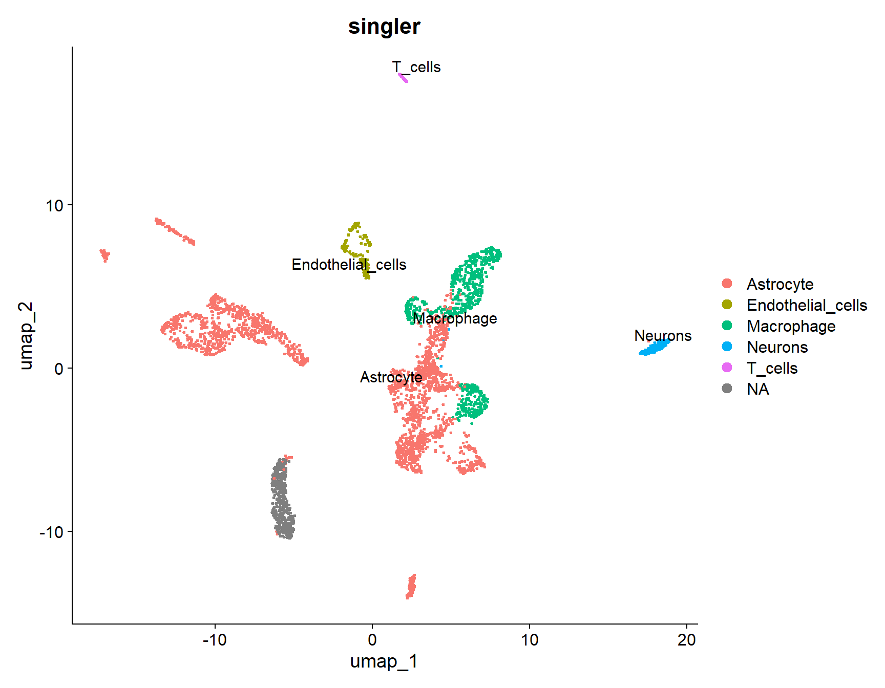
# Examine the reference-assignment scores
plotScoreHeatmap(pred)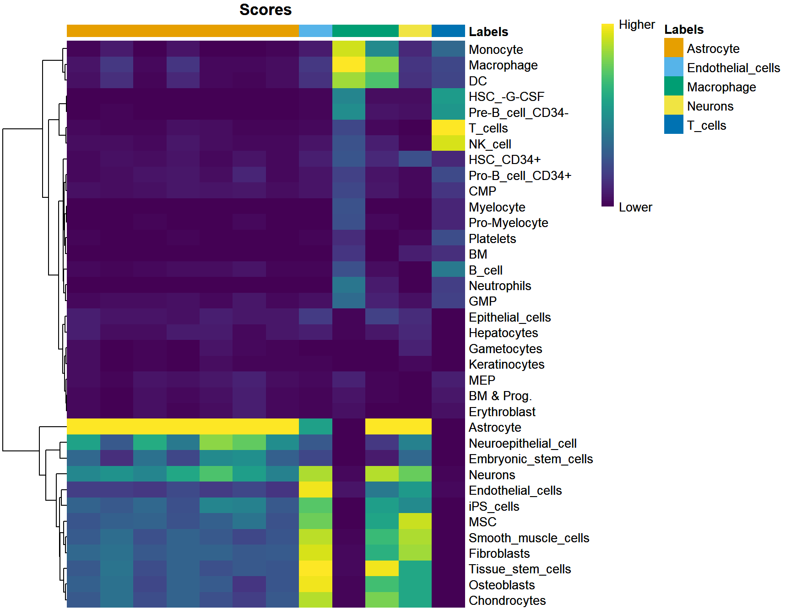
# Summarise the SingleR label assigned to each cluster
data.frame(cluster = rownames(pred), singler_label = pred$pruned.labels) cluster singler_label
1 0 Astrocyte
2 1 Astrocyte
3 2 Astrocyte
4 3 Macrophage
5 4 <NA>
6 5 Macrophage
7 6 Endothelial_cells
8 7 Neurons
9 8 Astrocyte
10 9 Astrocyte
11 10 Astrocyte
12 11 T_cellsSingleR predictions were treated as supporting evidence. The Human Primary Cell Atlas does not contain the diversity of malignant glioblastoma states, and a cluster-level annotation assigns a single label to clusters that may contain several lineages.
Validation with canonical markers
The final annotation was based on the concordance between data-driven marker genes, canonical cell-type markers and SingleR predictions. Multiple markers were considered for each population because the expression of a single gene may be affected by dropout, ambient RNA or shared biological programmes.
# Define the canonical markers of the expected populations
canonical_markers <- list(
"Exc. neuron" = c("SLC17A7", "TBR1", "NRGN"),
"Inh. neuron" = c("GAD1", "GAD2", "SST"),
"Oligo" = c("MOG", "MOBP", "PLP1"),
"OPC" = c("PDGFRA", "GPR17", "PCDH15"),
"Astro" = c("AQP4", "WIF1", "SLC39A12"),
"Tumour MES" = c("CHI3L1", "CD44", "TNC"),
"Tumour NPC" = c("SOX4", "ONECUT2", "MYCN"),
"Cycling" = c("MKI67", "TOP2A"),
"Myeloid" = c("CD163", "CSF1R", "P2RY12"),
"T/NK" = c("CD3E", "TRAC", "GZMA"),
"Endothelial" = c("CLDN5", "VWF"),
"Mural" = c("RGS5", "PDGFRB"))
# Remove genes that are not present in the FFPE expression matrix
canonical_markers <- lapply(canonical_markers, function(genes) {
intersect(genes, rownames(sobjFiltrd))
})
# Remove marker groups for which no gene was detected
canonical_markers <- canonical_markers[lengths(canonical_markers) > 0]The canonical-marker DotPlot was used to verify the presence of expected positive markers and the absence of incompatible lineage programmes. This figure provides the main visual justification for the manual annotation.
DotPlot(sobjFiltrd, features = canonical_markers, group.by = selected_resolution,
cluster.idents = FALSE) +
RotatedAxis() +
labs(title = "Canonical markers used for manual annotation",
x = "Canonical marker genes", y = "Cluster") +
theme(strip.text.x = element_text(angle = 90, hjust = 0, size = 8))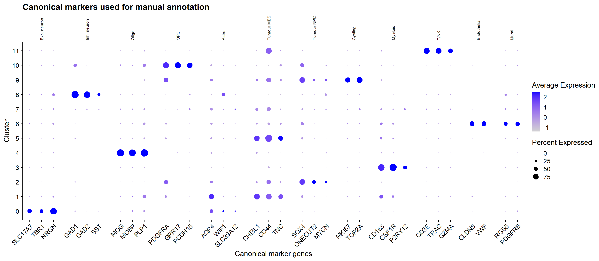
Inspection of ambiguous populations
Selected genes were visualised individually on the UMAP to confirm that their expression was localised to the expected clusters. This step was particularly important for distinguishing normal neural populations from tumour cells expressing neural or glial programmes.
# Visualise representative lineage and tumour-state markers on the UMAP
FeaturePlot(sobjFiltrd, features = c("CHI3L1", "CD44", "SLC17A7", "NRGN", "MOG", "PLP1",
"ONECUT2", "MKI67"),
reduction = "umap", order = TRUE, ncol = 2)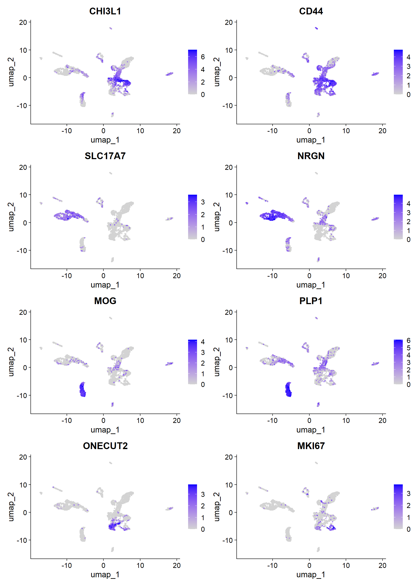
Expression distributions can also be examined across clusters using violin plots.
# Compare the distribution of selected markers across clusters
VlnPlot(sobjFiltrd, features = c("CHI3L1", "SLC17A7", "MOG", "ONECUT2"),
group.by = selected_resolution, pt.size = 0, ncol = 2)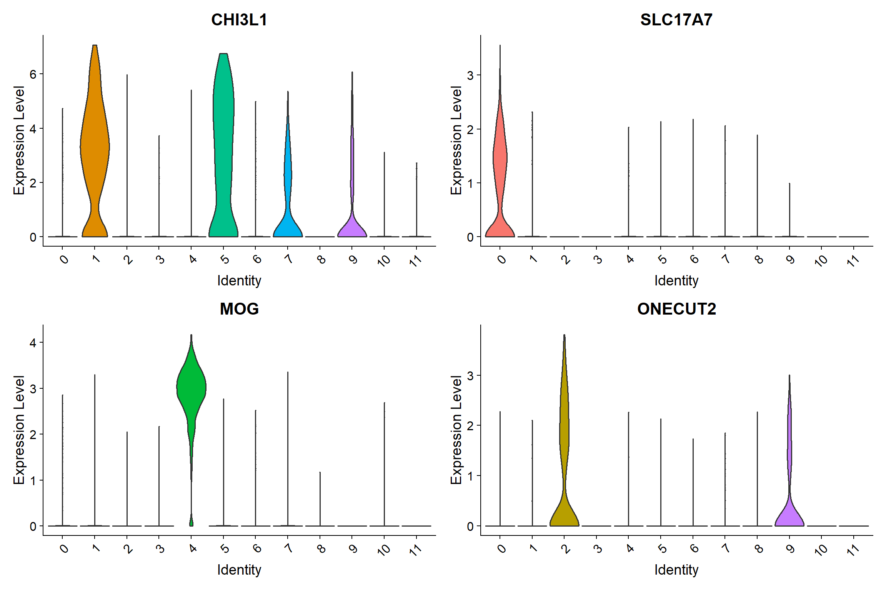
Final manual annotation
Cluster labels were assigned conservatively by combining the different sources of evidence. Populations with a neural or glial expression programme were not automatically considered malignant, as glioblastoma cells can resemble normal brain cell types. Tumour-related labels therefore remain provisional until validation by CNV analysis.
Cluster-level labels
Each cluster received a label from its markers. Two clusters were assigned a provisional label because they may contain more than one lineage: the hypoxic cluster 5, defined by a stress programme that can be shared across lineages, and the large neuronal cluster 0, which may embed a small glial population. Both were resolved in the next section.
# Assign the manually curated labels at the cluster level
new_labels <- c(
"0" = "Excitatory neurons",
"1" = "Tumour MES-like",
"2" = "Tumour NPC-like",
"3" = "Myeloid",
"4" = "Oligodendrocytes",
"5" = "Hypoxic (mixed lineage)",
"6" = "Vascular",
"7" = "Unclear",
"8" = "Inhibitory neurons",
"9" = "Cycling cells",
"10" = "OPC",
"11" = "T/NK cells")
# Stop if the mapping does not cover exactly the current clusters
stopifnot(setequal(names(new_labels), levels(Idents(sobjFiltrd))))
# Audit table: cluster size, strongest markers and assigned label
label_audit <- top_positive %>%
group_by(cluster) %>%
summarise(top_markers = paste(head(gene, 3), collapse = ", ")) %>%
mutate(cells = as.integer(table(Idents(sobjFiltrd))[as.character(cluster)]),
label = new_labels[as.character(cluster)])
print(label_audit, n = Inf)# A tibble: 12 × 4
cluster top_markers cells label
<fct> <chr> <int> <chr>
1 0 NPTX1, TBR1, FSTL4 797 Excitatory neurons
2 1 LTF, SERPINA3, ID3 600 Tumour MES-like
3 2 ONECUT2, LMO1, SAMD11 535 Tumour NPC-like
4 3 CCL4L2, CCL3, CCL4 455 Myeloid
5 4 CARNS1, SLC5A11, ENPP2 442 Oligodendrocytes
6 5 CXCL8, ANGPTL4, ADM 318 Hypoxic (mixed lineage)
7 6 VWF, CLDN5, CAVIN2 174 Vascular
8 7 TRIM49D1, CLLU1OS, TPTE 170 Unclear
9 8 SLC32A1, SST, TAC1 153 Inhibitory neurons
10 9 TROAP, ASPM, TOP2A 128 Cycling cells
11 10 COL20A1, GPR17, PCDH15 92 OPC
12 11 CD3D, IL2RB, CD247 48 T/NK cells # Store the cluster-level labels in the metadata
sobjFiltrd$celltype <- unname(new_labels[as.character(sobjFiltrd$RNA_snn_res.0.2)])Cluster 7 was characterised by rarely detected genes, undetected outside the cluster, without a coherent lineage programme. It was labelled Unclear and left for inferCNV to evaluate, rather than forcing an unsupported biological identity.
# Compare the library size of cluster 7 with the other clusters
unclear_cells <- WhichCells(sobjFiltrd, idents = "7")
umi_unclear <- median(sobjFiltrd$nCount_RNA[unclear_cells])
umi_other <- median(sobjFiltrd$nCount_RNA[setdiff(colnames(sobjFiltrd), unclear_cells)])The median UMI count of cluster 7 was 1,836.5 compared with 2,850.5 in the other clusters.
Resolution of the mixed clusters
The lineage of the cells of clusters 5 and 0 was evaluated by sub-clustering and by scoring marker modules. Each module score is the average expression of a set of markers relative to control genes of similar expression. Sub-clusters were assigned to the lineage with the higher module score, which is more robust than a decision based on single, sparsely detected genes.
# Define the marker modules that distinguish the lineages
modules <- list(
immune = c("PTPRC", "CSF1R", "CD163", "CD68", "P2RY12"),
tumour = c("CHI3L1", "CD44", "TNC", "SOX2", "EGFR"),
astro = c("AQP4", "SLC1A2", "SLC1A3"),
neuron = c("SLC17A7", "NRGN", "TBR1"))
# Keep the genes present in the expression matrix
modules <- lapply(modules, intersect, rownames(sobjFiltrd))
# Compute one module score per lineage
for (m in names(modules)) {
sobjFiltrd <- AddModuleScore(sobjFiltrd, features = list(modules[[m]]),
name = paste0(m, "_score"), assay = "RNA", seed = the.seed)
}Hypoxic cluster 5
Cluster 5 was defined by a hypoxic programme (ADM, ANGPTL4, CXCL8), which can be shared by cells of different lineages. The cluster was sub-clustered, and the immune and tumour module scores of each sub-cluster were compared.
# Sub-cluster the hypoxic cluster
sobjFiltrd <- FindSubCluster(sobjFiltrd, cluster = "5", graph.name = "RNA_snn",
subcluster.name = "sub_cluster5", resolution = 0.3)Modularity Optimizer version 1.3.0 by Ludo Waltman and Nees Jan van Eck
Number of nodes: 318
Number of edges: 8164
Running Louvain algorithm...
Maximum modularity in 10 random starts: 0.8235
Number of communities: 3
Elapsed time: 0 seconds# Retrieve the cells of cluster 5
cells5 <- WhichCells(sobjFiltrd, idents = "5")
# Summarise the lineage scores of each sub-cluster and assign its lineage
sub5_summary <- sobjFiltrd@meta.data[cells5, ] %>%
group_by(sub_cluster5) %>%
summarise(cells = n(),
immune_score = round(mean(immune_score1), 3),
tumour_score = round(mean(tumour_score1), 3)) %>%
mutate(lineage_difference = round(immune_score - tumour_score, 3),
label = ifelse(lineage_difference > 0, "Myeloid", "Tumour MES-like (hypoxic)"))
sub5_summary# A tibble: 3 × 6
sub_cluster5 cells immune_score tumour_score lineage_difference label
<chr> <int> <dbl> <dbl> <dbl> <chr>
1 5_0 161 -0.274 1.64 -1.91 Tumour MES-li…
2 5_1 98 0.753 0.15 0.603 Myeloid
3 5_2 59 -0.069 1.24 -1.31 Tumour MES-li…# Display the lineage markers in the sub-clusters of cluster 5
lineage_genes <- intersect(c("PTPRC", "CSF1R", "CD163", "CD68", "P2RY12",
"CHI3L1", "CD44", "TNC", "SOX2", "EGFR"), rownames(sobjFiltrd))
DotPlot(subset(sobjFiltrd, cells = cells5), features = lineage_genes,
group.by = "sub_cluster5") +
RotatedAxis() +
labs(title = "Lineage markers in the sub-clusters of cluster 5", x = "Gene", y = "Sub-cluster")Warning: Scaling data with a low number of groups may produce misleading
results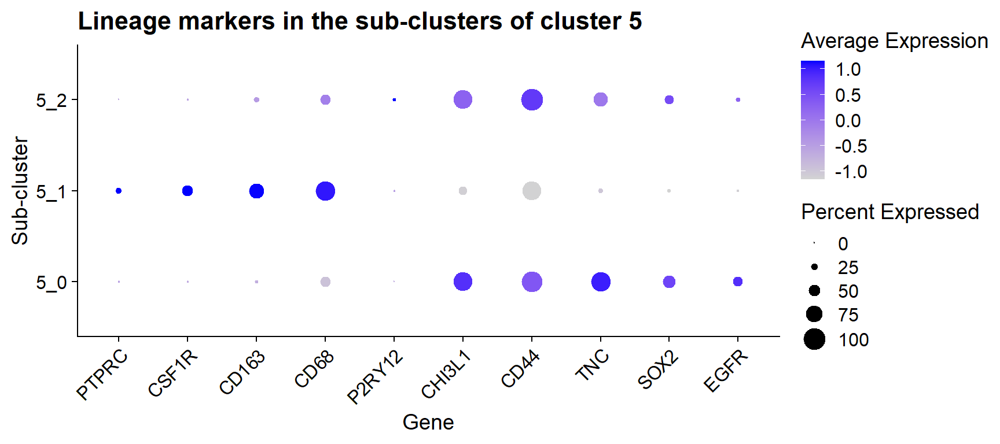
# Assign the lineage of each sub-cluster to its cells
labels_sub5 <- setNames(sub5_summary$label, sub5_summary$sub_cluster5)
celltype <- sobjFiltrd$celltype
celltype[cells5] <- unname(labels_sub5[sobjFiltrd$sub_cluster5[cells5]])
sobjFiltrd$celltype <- celltype
# Verify the assignment of the cells of cluster 5
table(sobjFiltrd$celltype[cells5])
Myeloid Tumour MES-like (hypoxic)
98 220 Cluster 5 was resolved into 98 myeloid cells and 220 tumour cells with a hypoxic mesenchymal-like programme.
Excitatory neuron cluster 0
Astrocytes can be embedded in a large neuronal cluster because their transcriptome is only a minor part of its variance. Cluster 0 was therefore sub-clustered, and the astrocytic and neuronal module scores of each sub-cluster were compared.
# Sub-cluster the neuronal cluster
sobjFiltrd <- FindSubCluster(sobjFiltrd, cluster = "0", graph.name = "RNA_snn",
subcluster.name = "sub_cluster0", resolution = 0.3)Modularity Optimizer version 1.3.0 by Ludo Waltman and Nees Jan van Eck
Number of nodes: 797
Number of edges: 22340
Running Louvain algorithm...
Maximum modularity in 10 random starts: 0.8639
Number of communities: 5
Elapsed time: 0 seconds# Retrieve the cells of cluster 0
cells0 <- WhichCells(sobjFiltrd, idents = "0")
# Summarise the lineage scores of each sub-cluster and assign its lineage
sub0_summary <- sobjFiltrd@meta.data[cells0, ] %>%
group_by(sub_cluster0) %>%
summarise(cells = n(),
astro_score = round(mean(astro_score1), 3),
neuron_score = round(mean(neuron_score1), 3)) %>%
mutate(lineage_difference = round(astro_score - neuron_score, 3),
label = ifelse(lineage_difference > 0, "Astrocytes", "Excitatory neurons"))
sub0_summary# A tibble: 5 × 6
sub_cluster0 cells astro_score neuron_score lineage_difference label
<chr> <int> <dbl> <dbl> <dbl> <chr>
1 0_0 275 -0.298 1.41 -1.71 Excitatory neu…
2 0_1 200 0.765 0.946 -0.181 Excitatory neu…
3 0_2 144 -0.783 1.46 -2.24 Excitatory neu…
4 0_3 90 -0.816 1.12 -1.93 Excitatory neu…
5 0_4 88 2.82 -0.086 2.90 Astrocytes # Display the neuronal and astrocytic markers in the sub-clusters of cluster 0
DotPlot(subset(sobjFiltrd, cells = cells0),
features = c(modules$neuron, modules$astro), group.by = "sub_cluster0") +
RotatedAxis() +
labs(title = "Neuronal and astrocytic markers in the sub-clusters of cluster 0",
x = "Gene", y = "Sub-cluster")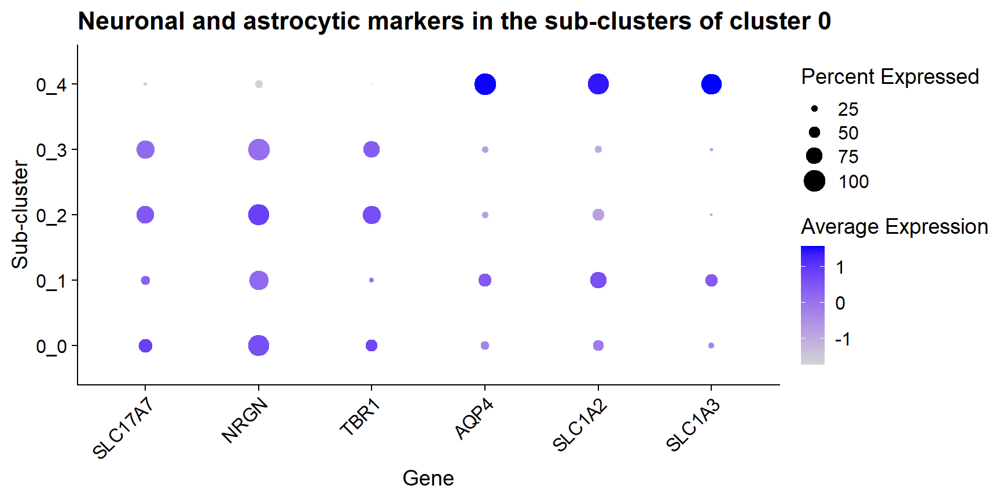
# Assign the lineage of each sub-cluster to its cells
labels_sub0 <- setNames(sub0_summary$label, sub0_summary$sub_cluster0)
celltype <- sobjFiltrd$celltype
celltype[cells0] <- unname(labels_sub0[sobjFiltrd$sub_cluster0[cells0]])
sobjFiltrd$celltype <- celltype
# Verify the assignment of the cells of cluster 0
table(sobjFiltrd$celltype[cells0])
Astrocytes Excitatory neurons
88 709 Cluster 0 was resolved into 709 excitatory neurons and 88 astrocytes.
Final annotation
The final annotation was stored as an ordered factor and set as the active identity of the object.
# Define the order of the cell types
celltype_levels <- c("Excitatory neurons", "Inhibitory neurons", "Astrocytes",
"Oligodendrocytes", "OPC", "Tumour MES-like",
"Tumour MES-like (hypoxic)", "Tumour NPC-like", "Cycling cells",
"Myeloid", "T/NK cells", "Vascular", "Unclear")
# Verify that every cell received a known label
stopifnot(!anyNA(sobjFiltrd$celltype), all(sobjFiltrd$celltype %in% celltype_levels))
# Store the final annotation as an ordered factor and set the identities
sobjFiltrd$celltype <- factor(sobjFiltrd$celltype,
levels = intersect(celltype_levels, unique(sobjFiltrd$celltype)))
Idents(sobjFiltrd) <- "celltype"
# Number and percentage of cells in each population
data.frame(cells = as.integer(table(sobjFiltrd$celltype)),
percentage = round(100 * as.numeric(prop.table(table(sobjFiltrd$celltype))), 1),
row.names = names(table(sobjFiltrd$celltype))) cells percentage
Excitatory neurons 709 18.1
Inhibitory neurons 153 3.9
Astrocytes 88 2.2
Oligodendrocytes 442 11.3
OPC 92 2.4
Tumour MES-like 600 15.3
Tumour MES-like (hypoxic) 220 5.6
Tumour NPC-like 535 13.7
Cycling cells 128 3.3
Myeloid 553 14.1
T/NK cells 48 1.2
Vascular 174 4.4
Unclear 170 4.3The final annotation was displayed on the UMAP. The Unclear label was retained for cells lacking a sufficiently coherent marker signature.
DimPlot(sobjFiltrd, reduction = "umap", group.by = "celltype", label = TRUE, repel = TRUE) +
labs(title = "Manual cell-type annotation")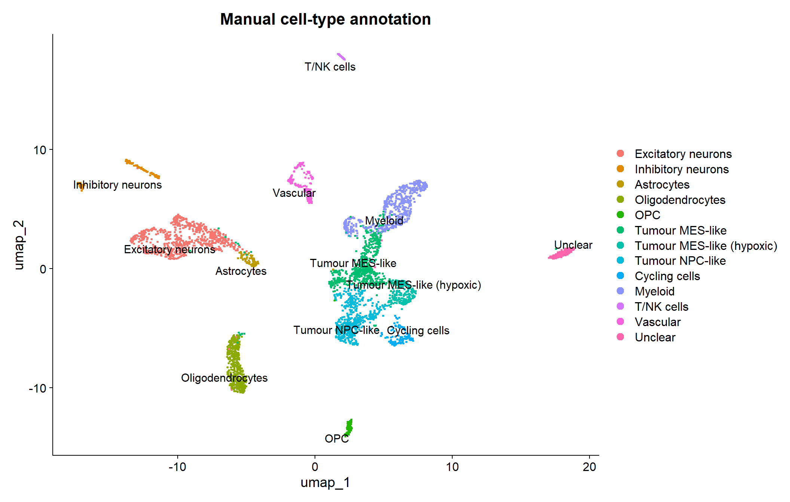
The canonical markers were finally projected on the final cell types, to verify that every population carries its expected programme, including the populations resolved from mixed clusters.
DotPlot(sobjFiltrd, features = canonical_markers, group.by = "celltype",
cluster.idents = FALSE) +
RotatedAxis() +
labs(title = "Canonical markers in the final cell types",
x = "Canonical marker genes", y = "Cell type") +
theme(strip.text.x = element_text(angle = 90, hjust = 0, size = 8))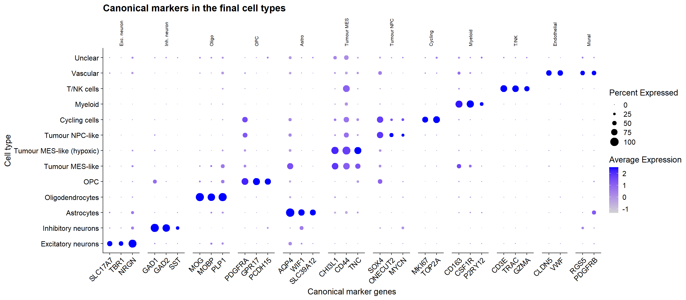
Finally, the annotated object was saved for the downstream tumour-state, microenvironment and CNV analyses.
# Save the annotated Seurat object
save(sobjFiltrd, file = paste0("../data/processed_data/", sample.name, "_ANNOTATED.rda"))Biological question
A glioblastoma contains two main populations that interact:
- Tumour cells, which do not form a homogeneous population but pass through multiple states.
- The tumour microenvironment (TME), formed by the non-tumour cells present within the tumour. In glioblastoma these are mainly macrophages and microglia (tumour-associated macrophages, TAMs), which can represent a large portion of the cells, together with blood vessels, a small number of T lymphocytes and infiltrated brain tissue.
The general question is therefore: in this tumour, which tumour states are present, what microenvironment surrounds them, and what signals might connect them?
# Record the software versions used in the analysis
sessionInfo()R version 4.4.3 (2025-02-28 ucrt)
Platform: x86_64-w64-mingw32/x64
Running under: Windows 11 x64 (build 26200)
Matrix products: default
locale:
[1] LC_COLLATE=English_United States.utf8
[2] LC_CTYPE=English_United States.utf8
[3] LC_MONETARY=English_United States.utf8
[4] LC_NUMERIC=C
[5] LC_TIME=English_United States.utf8
time zone: Europe/Berlin
tzcode source: internal
attached base packages:
[1] stats4 stats graphics grDevices utils datasets methods
[8] base
other attached packages:
[1] celldex_1.16.0 SingleR_2.8.0
[3] SummarizedExperiment_1.36.0 Biobase_2.66.0
[5] GenomicRanges_1.58.0 GenomeInfoDb_1.42.3
[7] IRanges_2.40.1 S4Vectors_0.44.0
[9] BiocGenerics_0.52.0 MatrixGenerics_1.18.1
[11] matrixStats_1.5.0 future_1.82.0
[13] ggplot2_4.0.3 dplyr_1.2.1
[15] Seurat_5.5.0 SeuratObject_5.4.0
[17] sp_2.2-0
loaded via a namespace (and not attached):
[1] RcppAnnoy_0.0.23 splines_4.4.3
[3] later_1.4.8 filelock_1.0.3
[5] tibble_3.2.1 polyclip_1.10-7
[7] fastDummies_1.7.6 httr2_1.2.2
[9] lifecycle_1.0.5 globals_0.20.0
[11] lattice_0.22-6 MASS_7.3-64
[13] alabaster.base_1.6.1 magrittr_2.0.3
[15] limma_3.62.2 plotly_4.12.1
[17] rmarkdown_2.32 yaml_2.3.12
[19] httpuv_1.6.17 otel_0.3.0
[21] sctransform_0.4.3 spam_2.11-3
[23] spatstat.sparse_3.1-0 reticulate_1.46.0
[25] cowplot_1.2.0 pbapply_1.7-5
[27] DBI_1.3.0 RColorBrewer_1.1-3
[29] abind_1.4-8 zlibbioc_1.52.0
[31] Rtsne_0.17 purrr_1.2.2
[33] rappdirs_0.3.4 GenomeInfoDbData_1.2.13
[35] ggrepel_0.9.8 irlba_2.3.7
[37] listenv_1.1.0 spatstat.utils_3.2-2
[39] pheatmap_1.0.13 goftest_1.2-3
[41] RSpectra_0.16-2 spatstat.random_3.4-5
[43] fitdistrplus_1.2-6 parallelly_1.47.0
[45] DelayedMatrixStats_1.28.1 codetools_0.2-20
[47] DelayedArray_0.32.0 tidyselect_1.2.1
[49] UCSC.utils_1.2.0 farver_2.1.2
[51] viridis_0.6.5 ScaledMatrix_1.14.0
[53] BiocFileCache_2.14.0 spatstat.explore_3.8-0
[55] jsonlite_1.9.1 BiocNeighbors_2.0.1
[57] progressr_1.1.0 ggridges_0.5.7
[59] survival_3.8-3 tools_4.4.3
[61] ica_1.0-3 Rcpp_1.0.14
[63] glue_1.8.0 gridExtra_2.3.1
[65] SparseArray_1.6.2 xfun_0.57
[67] HDF5Array_1.34.0 gypsum_1.2.0
[69] withr_3.0.3 BiocManager_1.30.27
[71] fastmap_1.2.0 rhdf5filters_1.18.1
[73] digest_0.6.39 rsvd_2.0.0
[75] R6_2.6.1 mime_0.12
[77] scattermore_1.2 tensor_1.5.1
[79] spatstat.data_3.1-9 RSQLite_2.4.6
[81] utf8_1.2.6 tidyr_1.3.2
[83] generics_0.1.4 data.table_1.18.2.1
[85] httr_1.4.9 htmlwidgets_1.6.4
[87] S4Arrays_1.6.0 uwot_0.2.4
[89] pkgconfig_2.0.3 gtable_0.3.6
[91] blob_1.3.0 lmtest_0.9-40
[93] S7_0.2.2 XVector_0.46.0
[95] htmltools_0.5.9 dotCall64_1.2
[97] alabaster.matrix_1.6.1 scales_1.4.0
[99] png_0.1-9 spatstat.univar_3.1-7
[101] knitr_1.52 rstudioapi_0.19.0
[103] reshape2_1.4.5 curl_7.1.0
[105] nlme_3.1-167 rhdf5_2.50.2
[107] zoo_1.8-15 cachem_1.1.0
[109] stringr_1.6.0 BiocVersion_3.20.0
[111] KernSmooth_2.23-26 parallel_4.4.3
[113] miniUI_0.1.2 vipor_0.4.7
[115] AnnotationDbi_1.68.0 ggrastr_1.0.2
[117] alabaster.schemas_1.6.0 pillar_1.11.1
[119] grid_4.4.3 vctrs_0.7.3
[121] RANN_2.6.2 promises_1.5.0
[123] BiocSingular_1.22.0 dbplyr_2.5.2
[125] beachmat_2.22.0 xtable_1.8-8
[127] cluster_2.1.8 beeswarm_0.4.0
[129] evaluate_1.0.5 cli_3.6.4
[131] compiler_4.4.3 rlang_1.2.0
[133] crayon_1.5.3 future.apply_1.21.0
[135] labeling_0.4.3 plyr_1.8.9
[137] ggbeeswarm_0.7.3 stringi_1.8.7
[139] alabaster.se_1.6.0 viridisLite_0.4.3
[141] deldir_2.0-4 BiocParallel_1.40.0
[143] Biostrings_2.74.1 spatstat.geom_3.7-3
[145] Matrix_1.7-2 ExperimentHub_2.14.0
[147] RcppHNSW_0.6.0 patchwork_1.3.2
[149] sparseMatrixStats_1.18.0 bit64_4.8.0
[151] Rhdf5lib_1.28.0 KEGGREST_1.46.0
[153] statmod_1.5.1 shiny_1.14.0
[155] alabaster.ranges_1.6.0 AnnotationHub_3.14.0
[157] ROCR_1.0-12 igraph_2.3.0
[159] memoise_2.0.1 bit_4.6.0